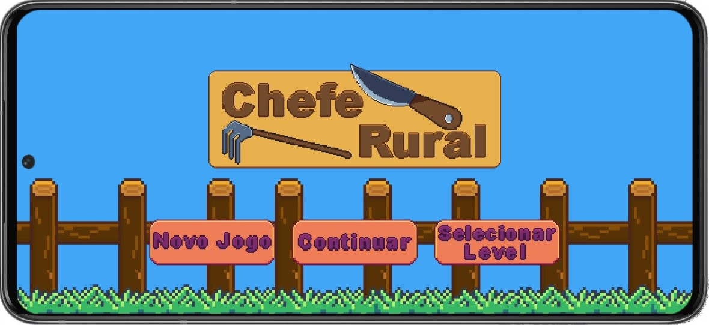

Chefe Rural
Olá pessoal. Estamos apresentando aqui de primeira mão para vocês o nosso jogo, o Chefe Rural. Vamos explicar um pouco sobre ele, deixar um vídeo caso se interesse em dar uma olhada, e falar nossas inspirações por trás do seu desenvolvimento. Tão bora.
Vídeo demonstrativo
Sobre o jogo
O jogo consiste no seguinte, na primeira fase o jogador deve plantar os materiais disponíveis em seu acervo, colocar fertilizantes e água e então colhé-los.

Feito isso, o jogador vai para uma na cozinha. Nela, os pedidos aparecem acima e construímos o prato conforme indica o pedido, e, após feito, o prato vai para a pia, lavamos ele e continuamos a servir.